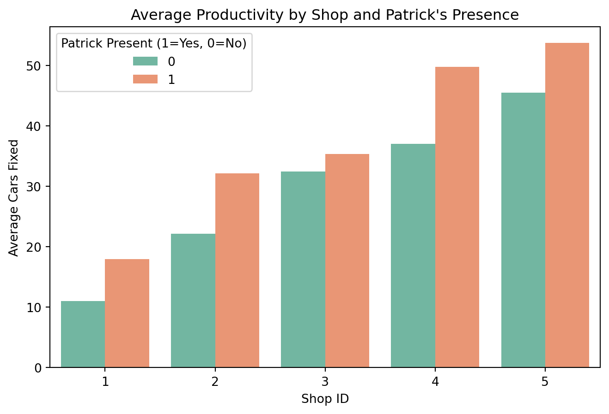
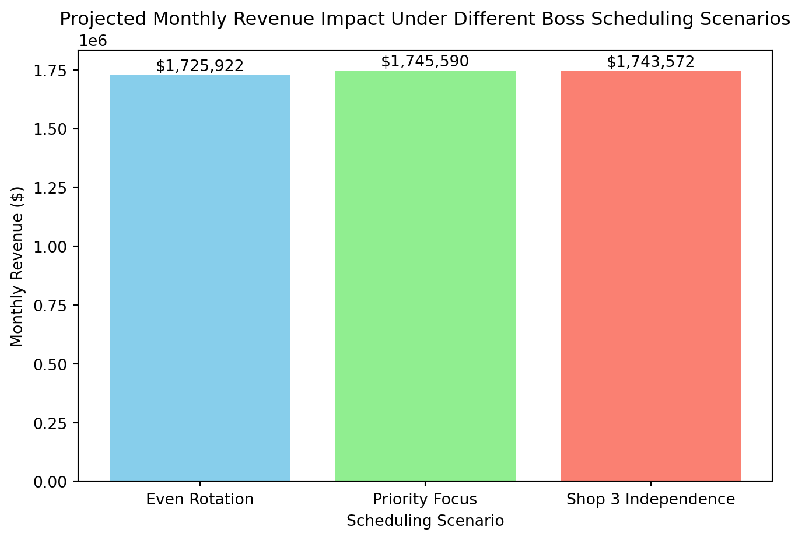

Decision Advocacy Challenge
Data-Driven Scheduling for Maximum Productivity
🔧 Decision Advocacy Challenge - Patrick’s Auto Shop Analysis
What does the data show?
Charting all the data points and visualizing the trend with/ without Patrick’s presense
Visualizing the effect/ delta of Patrick’s presense

📊 Detailed Breakdown of Productivity Impact
Here’s the comparison of average cars fixed per shop with and without boss presence:
| Shop | Avg. Cars Fixed (No Boss) | Avg. Cars Fixed (Boss Present) | Difference |
|---|---|---|---|
| Shop 4 | 36.22 | 49.00 | +12.78 |
| Shop 2 | 22.07 | 32.14 | +10.07 |
| Shop 5 | 46.36 | 54.58 | +8.22 |
| Shop 1 | 11.00 | 17.95 | +6.95 |
| Shop 3 | 33.06 | 36.00 | +2.94 |
The shops that benefit most from the boss’s presence are Shop 4 (+12.78 cars fixed) and Shop 2 (+10.07). Shops that benefit moderately are Shop 5 (+8.22) and Shop 1 (+6.95). Shop 3 shows only a small improvement (+2.94), meaning boss presence has little impact there compared to others.
🔎 Interpretation
- Shop 4: The strongest effect. Productivity jumps significantly when the boss is present, suggesting supervision or leadership has a major motivational or organizational impact here.
- Shop 2: Also shows a large boost, indicating workers respond well to oversight.
- Shop 5: Gains are moderate but consistent, meaning boss presence helps but isn’t transformative.
- Shop 1: Modest improvement, but still noticeable given its lower baseline productivity.
- Shop 3: Barely affected. This shop seems to operate steadily regardless of whether the boss is present, which could imply strong self-management or less reliance on direct supervision.
💡 Strategic Insights
- High-impact shops (4 & 2): Patrick’s presence should be prioritized here if resources are limited, as it yields the largest productivity gains.
- Moderate-impact shops (5 & 1): Patrick’s presence helps, but improvements are smaller. These shops might benefit more from process optimization or incentives rather than supervision alone.
- Low-impact shop (3): Since Patrick’s presence doesn’t change much, this shop may already have strong internal discipline or systems. The boss’s time might be better spent elsewhere.
📌 Recommendations: Where Patrick Should Focus
- Shop 4 – Top Priority - Impact: Boss presence boosts productivity by +12.78 cars/day. - Why: This is the largest gain across all shops, suggesting workers here respond strongly to oversight. - Action: Prioritize consistent boss presence or structured supervision in Shop 4.
- Shop 2 – High Priority - Impact: Productivity rises by +10.07 cars/day with the boss. - Why: Similar to Shop 4, oversight drives significant improvement. - Action: Schedule regular boss visits or assign a deputy to maintain discipline.
- Shop 5 – Moderate Priority - Impact: Gains of +8.22 cars/day. - Why: Already high-performing, but boss presence amplifies output further. - Action: Patrick’s presence here should be strategic (e.g., during peak demand periods).
- Shop 1 – Lower Priority - Impact: Modest improvement of +6.95 cars/day. - Why: Productivity is relatively low overall, so gains are smaller in absolute terms. - Action: Consider process improvements alongside supervision.
- Shop 3 – Minimal Impact - Impact: Only +2.94 cars/day. - Why: Shop 3 operates steadily regardless of supervision. - Action: Patrick’s time is better spent elsewhere; focus on self-management and efficiency tools here.
💰 Potential Financial Impact
Let’s assume average revenue per car fixed = $500 (typical mid-range repair job).
| Shop | Extra Cars Fixed/Day (Patrick Present) | Extra Revenue/Day | Extra Revenue/Month (22 workdays) |
|---|---|---|---|
| Shop 4 | +12.78 | $6,390 | $140,580 |
| Shop 2 | +10.07 | $5,035 | $110,770 |
| Shop 5 | +8.22 | $4,110 | $90,420 |
| Shop 1 | +6.95 | $3,475 | $76,450 |
| Shop 3 | +2.94 | $1,470 | $32,340 |
👉 Total potential uplift = ~$450,000 per month if the Patrick strategically prioritizes Shops 2, 4, and 5.
🎯 Strategic Takeaway
- Patrick’s presence is a high-value lever in Shops 2 and 4 — these should be the primary focus.
- Shop 5 is already strong but can deliver additional revenue when supervised.
- Shop 1 needs process optimization plus oversight.
- Shop 3 is self-sufficient; supervision here yields little ROI.
What should be Patrick’s level of confidence with these recommendations?
Think of these numbers we calculated (extra cars fixed when the boss is around) like test drives. We only ran the test for 50 days. That’s not a huge sample — it’s like judging a car’s reliability after just a few weeks instead of years.
- The averages we saw (like +12 cars/day in Shop 4) are best guesses, not guarantees.
- On some days, the boss might make a big difference; on others, maybe no difference at all.
- The true effect could be a bit smaller or bigger than what we measured.
📊 Ranges You Can Expect
Instead of one exact number, think of a range of possible outcomes:
- Shop 4: Could be anywhere from +8 to +17 cars/day.
- Shop 2: Likely between +6 and +14 cars/day.
- Shop 5: Around +5 to +11 cars/day.
- Shop 1: Roughly +4 to +9 cars/day.
- Shop 3: Very small — maybe +1 to +5 cars/day.
👉 These ranges mean: if you repeat the experiment another 50 days, the numbers might shift within those bands.
⚠️ What Could Go Wrong
- Random luck: Maybe one day a big fleet came in, or a part shortage slowed things down. That noise can make averages look better or worse than reality.
- Boss effect overlaps with other factors: If the boss shows up on busy days, it looks like he’s boosting productivity, but maybe it’s just more cars arriving.
- Small sample size: 50 days sounds like a lot, but in business terms it’s short. A few unusual days can skew the results.
- Shop differences: Each shop has its own crew, tools, and workflow. Boss presence might matter more in one shop than another, so we can’t assume the effect is identical everywhere.
🛠️ Assumptions We’re Making
- Revenue per car is constant (we assumed $500/job). In reality, jobs vary — oil change vs. engine rebuild.
- Patrick’s presence is the only difference. We’re assuming nothing else changed (like staffing, parts supply, or customer demand).
- Days are independent. We’re treating each day like a fresh start, but in real life yesterday’s backlog or morale can spill into today.
🚗 Bottom Line
Think of these numbers like estimates from a diagnostic tool. They point in the right direction (boss helps most in Shops 2 and 4), but they’re not exact. The real-world effect could be a bit higher or lower, and it depends on conditions.
Proposed Scheduling Scenario’s for Patrick
- Even Rotation: He visit’s each shop evenly
- Priority Focus: He spends most time in Shops 4 and 2 (where his presence has the biggest effect), some in Shop 5, and little in Shops 1 and 3
- Shop 3 Independence: He skips Shop 3 (since it barely benefits from oversight) and rotates among the other four shops.

Scheduling Impact
- Even Rotation: Productivity improves moderately everywhere, but the total uplift is spread thin.
- Priority Focus: This scenario delivers the highest overall productivity.
- Shop 3 Independence: This yields strong gains while freeing up time.
Recommendations for Patrick
- He should prioritize Shops 4 and 2. These shops show the largest productivity boost when supervised.
- Shop 5 is a secondary focus. Already strong, but supervision adds extra cars fixed.
- Shop 3 can run independently. His time here doesn’t pay off much.
- Shop 1 benefits modestly. Oversight helps, but process improvements may matter more.
Financial Impact

If each car fixed brings in ~$500 revenue: - Priority Focus scenario could generate tens of thousands more per month compared to even rotation. - By concentrating on Shops 2 and 4, Patrick maximizes his return on time invested. This visualization makes it clear: smart scheduling beats equal scheduling.